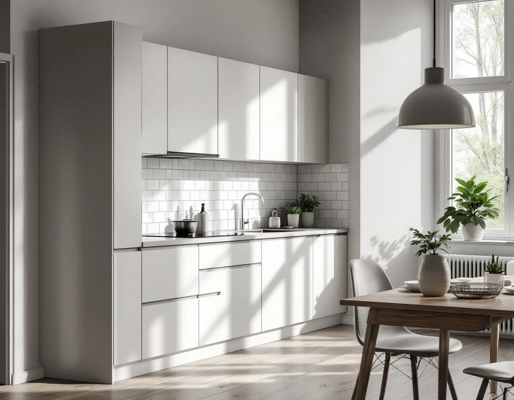
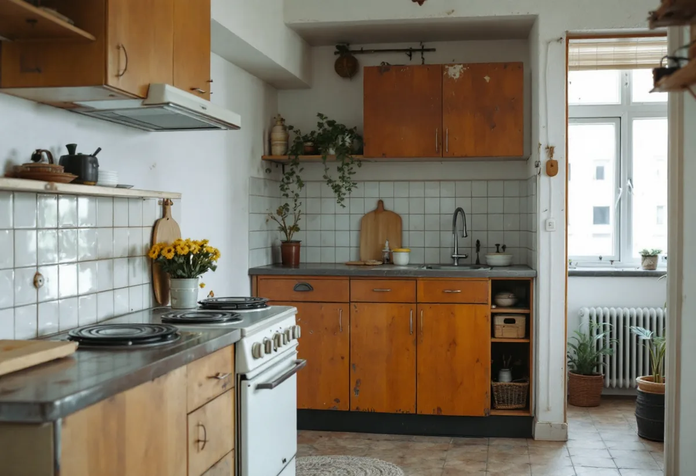
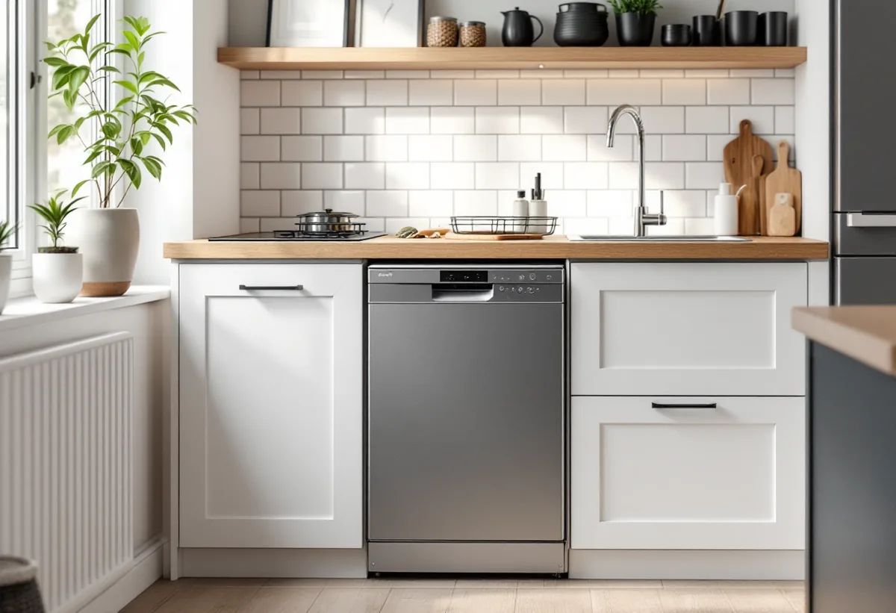

Platsbesök
Gratis besök där vi mäter kokvrån och tittar på kanal och stammar.
I Vasastan finns många små lägenheter som saknar ett fullständigt kök. Att göra en kokvrå till ett riktigt kök är en annan uppgift än att byta luckor. Geal Entreprenad AB går igenom ventilation, ledningar och föreningens regler och bygger köket färdigt.

Stadens områdesfakta för 2025 redovisar lägenheter efter storlek, och en egen kolumn gäller lägenheter utan kök. I statistikområdet Gustav Vasa är det 1 107 av 8 532 lägenheter i flerbostadshus, i Västra Matteus 782 av 11 913 och i Östra Matteus 692 av 7 636. Det handlar ofta om ettor med kokvrå eller kokskåp.
Att göra en sådan lägenhet till en etta med kök är en av de vanligaste förändringarna i små lägenheter. Det kräver mer än nya skåp: köket behöver tillräcklig frånluft, avloppet ska klara diskmaskin och diskbänk, och elen ska räcka till spis och ugn. El och VVS utförs av behöriga installatörer.

Stockholms stad skriver att ett kök ska ha tillräcklig frånluft och uppfylla kraven för imkanal. Ska badrummets kanal användas för både badrum och kök måste kanalens sammanlagda mått räcka, och staden rekommenderar att du rådgör med sotaren tidigt. I en kokvrå finns ibland bara en enkel ventil, och då är det frågan om kanalen kan ta emot en köksfläkt som styr hur köket kan byggas.
Kräver köket en ny kanal eller en väsentlig ändring av ventilationen – till exempel en fläkt som påverkar luftflödena – behövs en anmälan till staden och ett startbesked. Vi tar reda på hur huset ventileras innan vi ritar köket, så att det inte blir en överraskning när skåpen redan är beställda.
De flesta lägenheter i Vasastan är bostadsrätter – i Västra Matteus 8 985 av bostäderna i flerbostadshus enligt områdesfakta. Bostadsrättslagen kräver styrelsens tillstånd för installation eller ändring av ledningar för vatten och avlopp, för ändrad ventilation och för annan väsentlig förändring av lägenheten. Att bygga ett kök där det inte har funnits något är just en sådan förändring.
Styrelsen får bara vägra om åtgärden är till påtaglig skada eller olägenhet för föreningen, men den får förena tillståndet med villkor – till exempel om hur rör dras eller vem som utför arbetet. Vi skriver en beskrivning med ritningar som styrelsen kan ta ställning till.
Staden kräver inte bygglov för att flytta ett kök, men en anmälan om flytten innebär en ny VA-stam i ett nytt schakt, ändring av bärande konstruktion eller brandskydd, eller väsentligt ändrad ventilation. Det är därför oftast enklast att bygga köket där kokvrån redan finns, nära stammarna och kanalen.
I en liten lägenhet handlar resten om att få plats: smala skåp, en spis med två eller fyra plattor, diskmaskin i halv bredd och förvaring ända upp till taket. Vi ritar köket efter de mått lägenheten har, och vi tar hänsyn till fönster, dörrar och element så att skåpen inte tar ljuset eller blockerar en dörr. I äldre hus är väggarna sällan raka, och då måttbeställs ofta bänkskiva och passbitar efter att väggarna har kontrollerats. Mer om kök i allmänhet finns under köksrenovering, och om badrummet i samma lägenhet under badrumsrenovering i Vasastan.

Gratis besök där vi mäter kokvrån och tittar på kanal och stammar.
Kökslösning efter lägenhetens mått, med fläkt och vitvaror.
Beskrivning och ritningar för styrelsens tillstånd.
Anmälan till staden där ventilation eller ny stam kräver det.
El och VVS via behöriga installatörer, montering och anslutning.
Genomgång av köket och dokumentation till föreningen.
Skatteverket godkänner rotavdrag i en bostadsrätt för arbete inne i lägenheten som du själv ansvarar för enligt föreningens stadgar – till exempel att montera fast köksinredning och installera vitvaror i samband med en omfattande renovering, byta köksluckor eller riva innerväggar. Avdraget gäller arbetskostnaden, och Geal drar det direkt på fakturan.
Om ventilationen räcker eller behöver ändras, hur långt det är till stammarna, el till spis och ugn, inredning och vitvaror samt hur material bärs upp i ett äldre trapphus. Efter ett gratis platsbesök får du ett skriftligt kostnadsförslag.
Planering, el, VVS, fläkt och väggar.
Köksrenovering i Stockholm →Takbyte, takbesiktning och plåtarbeten.
Takläggare i Vasastan →Stenstad, Röda Bergen och föreningarnas tak.
Takrenovering i Vasastan →Flytta badrummet, ny stam och frånluft.
Badrumsrenovering i Vasastan →När en lokal blir bostad.
Byggföretag i Vasastan →Fasadmålning för föreningar.
Fasadmålning i Vasastan →Ställning, tillstånd och etablering på gatan.
Fasadrenovering i Vasastan →Storgårdskvarteren och 20-talets fönster.
Fönsterbyte i Vasastan →Fönster i Birkastadens jugendhus.
Fönsterrenovering i Vasastan →Springor, kupning och underhåll.
Golvläggare i Vasastan →Stav- och fiskbensparkett.
Golvslipning i Vasastan →Snickerier, fönster och sprucket spackel.
Målare i Vasastan →Takfönster, vindar och plåt.
Plåtslagare i Vasastan →Öppna upp, nya dörröppningar och listverk.
Snickare i Vasastan →Takbyte för föreningar och fastighetsägare.
Takbyte i Vasastan →Ny tapet på gamla putsväggar.
Tapetsering i Vasastan →Hela lägenheten, med husets värden kvar.
Totalrenovering i Vasastan →